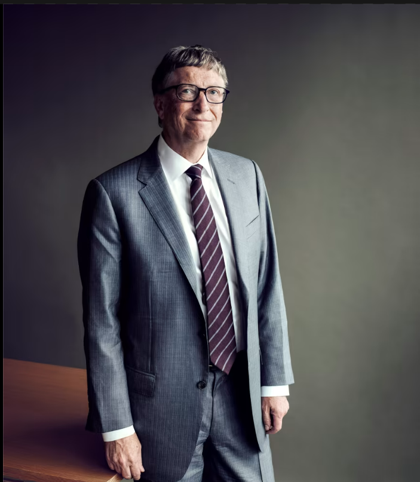
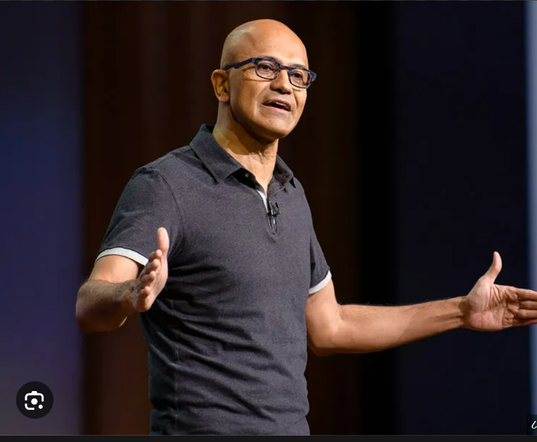

During my time at Microsoft, I had the opportunity to work on exciting projects and collaborate with industry experts. It helped me develop my skills in software development, project management, and teamwork, which proved to be invaluable in my future endeavors. I learned the importance of creativity, innovation, and perseverance when pursuing new ideas and also helped me navigate challenges and setbacks in a resilient and adaptable manner.
Overall, my experience at Microsoft was enriching, and I am grateful for the opportunity to have worked with such an innovative and talented company.
As a software engineer at Microsoft, my primary responsibility was to develop and maintain software applications and systems that meet the needs of the company and its customers. This includes collaborating with other engineers, project managers, and stakeholders to understand requirements and design specifications for new features or products. I wrote high-quality, efficient, and maintainable code using languages such as C++, C#, or Java. I also tested and debugged code to ensure it worked correctly and met quality standards, contributed to the design and architecture of software systems, and stayed up-to-date with new technologies and industry trends to ensure our software remained current and competitive. Additionally, I was expected to communicate progress and issues to project managers and stakeholders, work in an agile development environment, and deliver software products in a timely manner.


© 2022 Sudip. All rights reserved